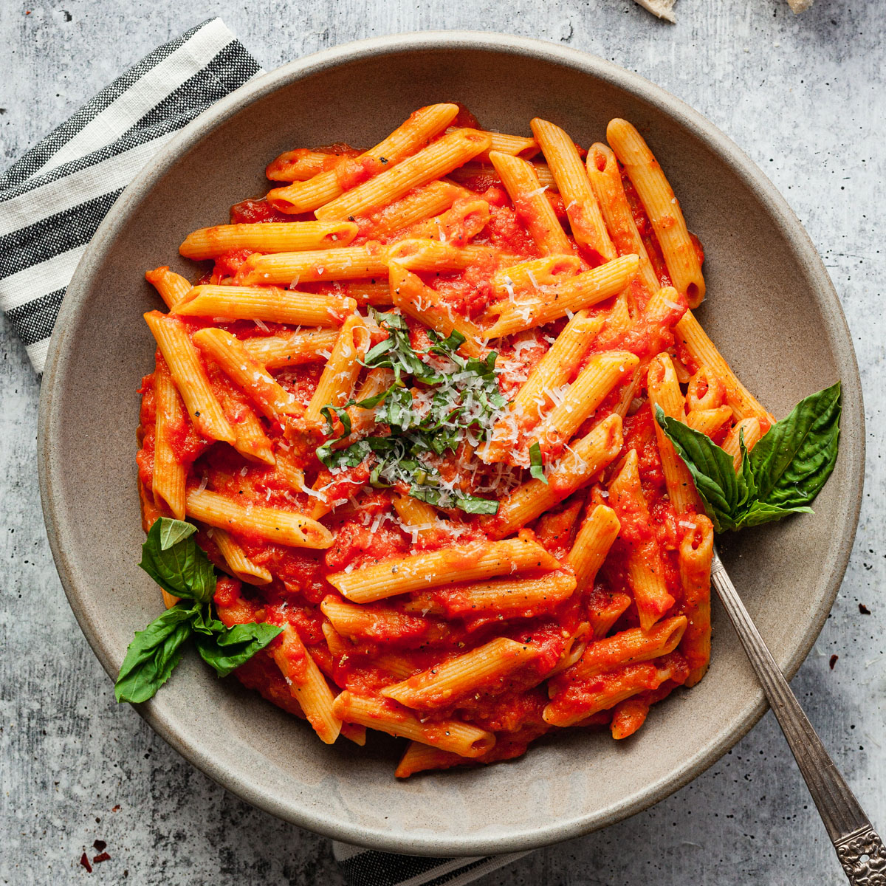

Penne al pomodoro
Ingredienti
Di seguito riportiamo gli ingredienti per preparare il nostro piatto:
- 300g di penne rigate
- 350g di passata di pomodoro
- parmigiano q.b.
- basilico q.b.
- 1 spicchio d'aglio
Preparazione
- Imbiondire l'aglio in una padella con un filo di olio extravergine di oliva
- Versare la salsa di pomodoro e poi cuocere per una ventina di minuti
- Scolare la pasta e saltarla in padella
- Versare la salsa sulla pasta, saltandola
- Servire il piatto